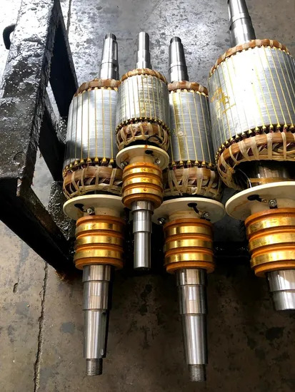
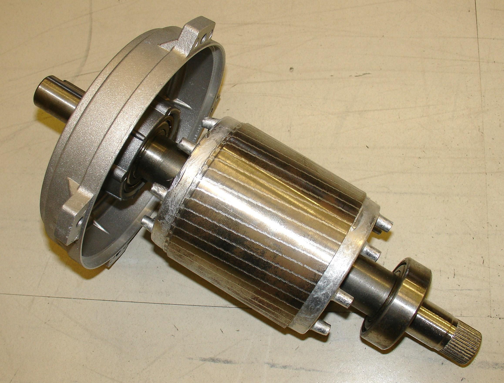
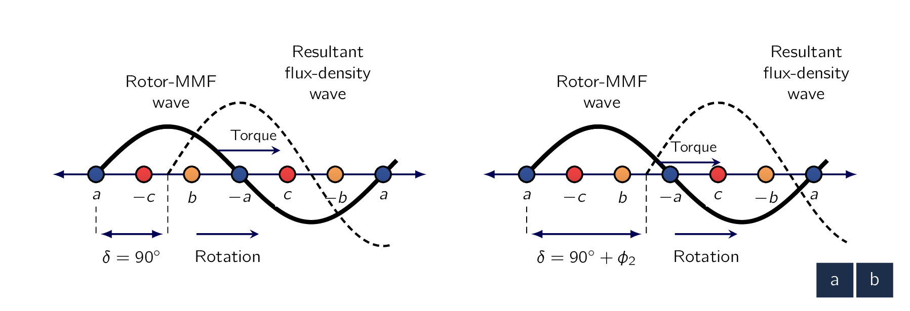
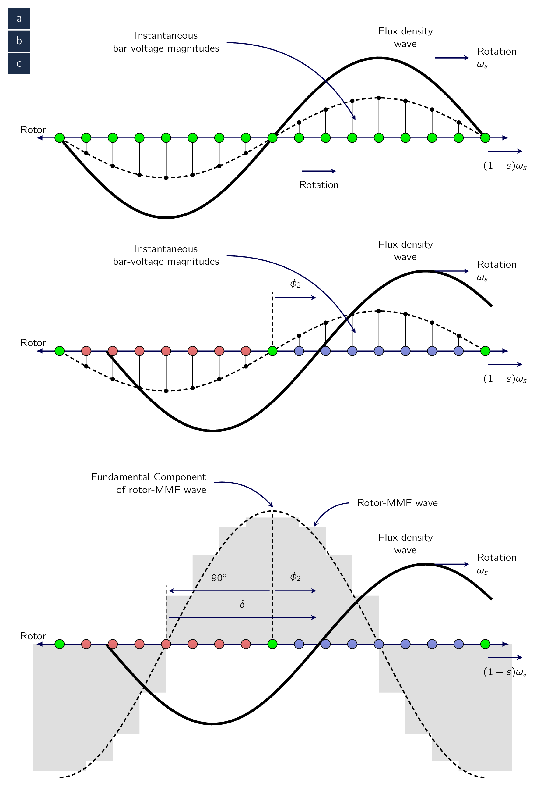

As indicated in Chapter 4, an IMInduction Machinean AC electric motor in which the electric current in the rotor that produces torque is obtained by electromagnetic induction from the magnetic field of the stator winding. is one in which ACAlternating CurrentAn electric current that periodically reverses direction and changes its magnitude continuously with time, in contrast to direct current (DC), which flows only in one direction. is supplied to the stator directly and to the rotor by induction or transformer action from the stator. Similar to SynMSynchronous Machinean AC electrical device which operates at a constant synchronous speed, serving as either a synchronous generator (alternator) or a synchronous motor. It features a stationary stator with three-phase windings and a rotating rotor excited by direct current (DC) or permanent magnets., the stator winding is of the type discussed in Chapter 4. When excited from a balanced poly-phase source, it will produce a magnetic field in the air gap rotating at synchronous speed as determined by the number of stator poles and the applied stator frequency (). The rotor of a poly-phase IMInduction Machinean AC electric motor in which the electric current in the rotor that produces torque is obtained by electromagnetic induction from the magnetic field of the stator winding. may be one of two (2) types: [155] Of course, this is a simplification. While majority of rotor types fall into these categories, there are specialised types (such as solid rotor, copper coated, or slitted) which are mostly made for specific application.
- Wound Rotor
-
Built with a poly-phase winding similar to, and wound with the same number of poles as, the stator. The terminals of the rotor winding are connected to insulated slip rings mounted on the shaft. Carbon brushes bearing on these rings make the rotor terminals available external to the motor.
Wound-rotor IMInduction Machinean AC electric motor in which the electric current in the rotor that produces torque is obtained by electromagnetic induction from the magnetic field of the stator winding.s are relatively uncommon, being found only in a limited number of specialised applications.
- Squirrel Cage
-
Winding consisting of conducting bars embedded in slots in the rotor iron and short-circuited at each end by conducting end rings. The extreme simplicity and ruggedness of the squirrel-cage construction are outstanding advantages of this type of IMInduction Machinean AC electric motor in which the electric current in the rotor that produces torque is obtained by electromagnetic induction from the magnetic field of the stator winding. and make it by far the most commonly used type of motor in sizes ranging from fractional horsepower on up. Fig. 6.2 shows the rotor of a small squirrel-cage motor.


Let us assume the rotor is turning at the steady speed of in the same direction as the rotating stator field. Let the synchronous speed of the stator field be . The difference between synchronous speed and the rotor speed is commonly referred to as the slip of the rotor, in this case the rotor slip is , as measured in . Slip is most commonly defined as a fraction of synchronous speed as:
| (6.1) |
It is this definition of slip which is used in the equations which characterise the performance of IMInduction Machinean AC electric motor in which the electric current in the rotor that produces torque is obtained by electromagnetic induction from the magnetic field of the stator winding.s as developed in this chapter.
Finally, slip is often expressed in percent, simply equal to 100 percent times the fractional slip
The rotor speed in can be expressed in terms of the slip and the synchronous speed as:
| (6.2) |
Similarly, the mechanical angular velocity can be expressed in terms of the synchronous angular velocity and the slip as:
| (6.3) |
The relative motion of the stator flux and the rotor conductors induces voltages of frequency () and is calculated to be:
| (6.4) |
referred to as the slip frequency, in the rotor.
The electrical behavior of an IMInduction Machinean AC electric motor in which the electric current in the rotor that produces torque is obtained by electromagnetic induction from the magnetic field of the stator winding. is similar to that of a transformer but with the additional feature of frequency transformation produced by the relative motion of the stator and rotor windings. [156] In fact, a wound-rotor IMInduction Machinean AC electric motor in which the electric current in the rotor that produces torque is obtained by electromagnetic induction from the magnetic field of the stator winding. can be used as a frequency changer. However, this application is seldom used nowadays.
The rotor terminals of an IMInduction Machinean AC electric motor in which the electric current in the rotor that produces torque is obtained by electromagnetic induction from the magnetic field of the stator winding. are short circuited by construction in the case of a squirrel-cage motor and externally in the case of a wound-rotor motor. Slip-frequency voltages are induced in the rotor windings by the rotating air-gap flux. The rotor currents are then determined by the magnitudes of the induced voltages and the slip-frequency rotor impedance. During starting, the rotor is stationary (), the slip is unity [157] In this case we mean the value is at its highest possible value. (), and the rotor frequency equals the stator frequency (). The field produced by the rotor currents therefore revolves at the same speed as the stator field, and a starting torque results, tending to turn the rotor in the direction of rotation of the stator-inducing field.
If this torque is sufficient to overcome the opposition to rotation created by the shaft load, the motor will spin up to its operating speed.
The operating speed can NOT be equal the synchronous speed, given the rotor conductors would then be stationary with respect to the stator field and no current would be induced in them, which causes no torque to be produced.
With the rotor revolving in the same direction of rotation as the stator field, the frequency of the rotor currents will be and they will produce a rotating flux wave which will rotate at with respect to the rotor in the forward direction. But superimposed on this rotation is the mechanical rotation of the rotor at . Therefore, with respect to the stator, the speed of the flux wave produced by the rotor currents is the sum of these two speeds and equals
| (6.5) |
From Eq. (6.5) we see the rotor currents produce an air-gap flux wave rotating at synchronous speed and therefore in synchronism with that produced by the stator currents.
Because the stator and rotor fields each rotate synchronously, they are stationary with respect to each other and produce a steady torque, thus maintaining rotation of the rotor. Such torque, which exists for any mechanical rotor speed other than synchronous speed, is called an asynchronous torque.

Fig. 6.3 shows the form of a typical poly-phase squirrel-cage IMInduction Machinean AC electric motor in which the electric current in the rotor that produces torque is obtained by electromagnetic induction from the magnetic field of the stator winding. torque-speed curve. [158] It is NOT worth looking it to the curve in detail at the moment as it will be explained in a later section. The factors influencing the shape of this curve can be appreciated in terms of the torque equation discussed in Rotating Magnetic Fields.
The resultant air-gap flux () in this equation is approximately constant when the stator-applied voltage and frequency are constant.
Also, let’s remember that the rotor MMFMagneto-motive ForceThe magnetic pressure which drives magnetic flux in a magnetic circuit, and is the work done to move a unit magnetic pole. () is proportional to the rotor current (). Therefore we can alternatively represent the torque equation as:
| (6.6) |
where is a constant and is the angle by which the rotor MMFMagneto-motive ForceThe magnetic pressure which drives magnetic flux in a magnetic circuit, and is the work done to move a unit magnetic pole. wave leads the resultant air-gap MMFMagneto-motive ForceThe magnetic pressure which drives magnetic flux in a magnetic circuit, and is the work done to move a unit magnetic pole. wave. The minus sign is included in Eq. (6.6) because the induced rotor current is in the direction to demagnetize the air-gap flux, whereas the rotor current is defined in Rotating Magnetic Fields as being in the direction to magnetize the air-gap flux. Under normal running conditions the slip is small:
The rotor frequency () therefore is very low which is correspondingly on the order of to in motors. For these frequencies, the rotor impedance is largely resistive and hence independent of slip. The rotor-induced voltage, on the other hand, is proportional to slip and leads the resultant air-gap flux by . Since the rotor windings are short-circuited, the rotor current must be equal to the negative of the voltage induced by the air-gap flux divided by the rotor impedance.
Therefore it is very nearly proportional to the slip, and proportional to and out of phase with the rotor voltage. As a result, the rotor-MMFMagneto-motive ForceThe magnetic pressure which drives magnetic flux in a magnetic circuit, and is the work done to move a unit magnetic pole. wave lags the resultant air-gap flux by approximately degrees, and therefore . Approximate proportionality of rotor current and hence torque with slip is therefore to be expected in the range where the slip is small. As slip increases, the rotor impedance increases because of the increasing contribution of the rotor leakage inductance and the increase of current and torque with slip becomes less than proportional. In addition, the rotor current () lags farther behind the induced voltage, and the magnitude of decreases, further decreasing the resultant torque. A more detailed analysis will show that the torque increases with increasing slip up to a maximum value and then decreases, as shown in Fig. 4.10.
The maximum torque, or breakdown torque, which is typically a factor of two (2) or more larger than the rated motor torque, limits the short-time overload capability of the motor.
We will see that the slip at which the peak torque occurs is proportional to the rotor resistance. For squirrel-cage motors this peak-torque slip is relatively small, much as is shown in Fig. 4.10. Therefore, the squirrel-cage motor is substantially a constant-speed motor having a few percent drop in speed from no load to full load.
In the case of a wound-rotor motor, the rotor resistance can be increased by inserting external resistance, hence increasing the slip at peak-torque, and thus decreasing the motor speed for a specified value of torque. Since wound-rotor IMInduction Machinean AC electric motor in which the electric current in the rotor that produces torque is obtained by electromagnetic induction from the magnetic field of the stator winding.s are larger, more expensive, and require significantly more maintenance than squirrel-cage machines, this method of speed control is rarely used, and IMInduction Machinean AC electric motor in which the electric current in the rotor that produces torque is obtained by electromagnetic induction from the magnetic field of the stator winding.s driven from constant-frequency sources tend to be limited to essentially constant-speed applications.
In recent years, the use of solid-state, variable-voltage, variable-frequency drive systems makes it possible to readily control the speed of squirrel-cage IMInduction Machinean AC electric motor in which the electric current in the rotor that produces torque is obtained by electromagnetic induction from the magnetic field of the stator winding.s and, as a result, are now widely used in a wide-range of variable-speed applications.
For a coil-wound rotor, the flux-MMFMagneto-motive ForceThe magnetic pressure which drives magnetic flux in a magnetic circuit, and is the work done to move a unit magnetic pole. situation can be seen with the aid of Fig. 6.4. This sketch shows the development of a simple two-pole, three-phase rotor winding in a two-pole field. It therefore conforms with the restriction that a wound rotor must have the same number of poles as the stator. [159] although the number of phases need not be the same. The rotor flux-density wave is moving to the right at angular velocity () and at slip angular velocity () with respect to the rotor winding, which in turn is rotating to the right at angular velocity . It is shown in Fig. 6.4 in the position of maximum instantaneous voltage in phase a.

If the rotor leakage reactance, equal to times the rotor leakage inductance, is very small compared with the rotor resistance, [160] which is typically the case at the small slips corresponding to normal operation. the phase-a current will also be a maximum. As shown in Rotating Magnetic Fields, the rotor-MMFMagneto-motive ForceThe magnetic pressure which drives magnetic flux in a magnetic circuit, and is the work done to move a unit magnetic pole. wave will then be centered on phase-a which is also shown in Fig. 6.4. The displacement angle, or torque angle, , under these conditions is at its optimum value of -. If the rotor leakage reactance is appreciable however, the phase-a current lags the induced voltage by the power-factor angle of the rotor leakage impedance. The phase- current will not be at maximum until a correspondingly later time. The rotor-MMFMagneto-motive ForceThe magnetic pressure which drives magnetic flux in a magnetic circuit, and is the work done to move a unit magnetic pole. wave will then not be centered on phase a until the flux wave has traveled degrees farther down the gap, as shown in Fig. 6.4. The angle is now . In general, therefore, the torque angle of an IMInduction Machinean AC electric motor in which the electric current in the rotor that produces torque is obtained by electromagnetic induction from the magnetic field of the stator winding. is
| (6.7) |
It departs from the optimum value of by the power-factor angle of the rotor leakage impedance at slip frequency. The electromechanical rotor torque is directed toward the right in Fig. 6.4, or in the direction of the rotating flux wave. The comparable picture for a squirrel-cage rotor is given in Fig. 6.5. A 16-bar rotor placed in a two-pole field is shown in developed form.
To simplify the drawing, only a relatively small number of rotor bars has been chosen and the number is an integral multiple of the number of poles, a choice normally avoided in practice in order to prevent harmful harmonic effects.
In Fig. 6.5a the sinusoidal flux-density wave induces a voltage in each bar which has an instantaneous value indicated by the solid vertical lines.
At a somewhat later instant of time, the bar currents assume the instantaneous values indicated by the solid vertical lines in Fig. 6.5b, the time lag corresponding to the rotor power-factor angle . In this time interval, the flux-density wave has traveled in its direction of rotation with respect to the rotor through a space angle and is then in the position shown in Fig. 6.5b. The corresponding rotor-mmf wave is shown by the step wave of Fig. 6.5c. The fundamental component is shown by the dashed sinusoid and the flux-density wave by the solid sinusoid. Study of these figures confirms the general principle that the number of rotor poles in a squirrel-cage rotor is determined by the inducing flux wave.

-
¶
- MMFMagneto-motive Force
The magnetic pressure which drives magnetic flux in a magnetic circuit, and is the work done to move a unit magnetic pole.
-
¶
- SynMSynchronous Machine
an AC electrical device which operates at a constant synchronous speed, serving as either a synchronous generator (alternator) or a synchronous motor. It features a stationary stator with three-phase windings and a rotating rotor excited by direct current (DC) or permanent magnets.
-
¶
- ACAlternating Current
An electric current that periodically reverses direction and changes its magnitude continuously with time, in contrast to direct current (DC), which flows only in one direction.
-
¶
- IMInduction Machine
an AC electric motor in which the electric current in the rotor that produces torque is obtained by electromagnetic induction from the magnetic field of the stator winding.